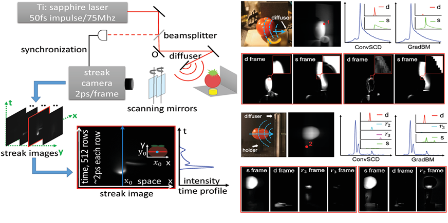

| Robust and accurate transient light transport decomposition via convolutional sparse coding. |
Xuemei Hu1,2 Yue Deng1,2 Xing Lin1,2 Jinli Suo1,2 Qionghai Dai1,2 Christopher Barsi3 and Ramesh Raskar3 1Deptartment of Automation, Tsinghua University 2 Beijing Key Laboratory of Multi-dimension and Multi-scale Computational Photography 3 Media Lab, Massachusetts Institute of Technology |
 |
Publications |
| Xuemei Hu, Yue Deng, Xing Lin, Jinli Suo, Qionghai Dai, Christopher Barsi and Ramesh Raskar, Robust and accurate transient light transport decomposition via convolutional sparse coding, Optics Letters(OL), 2014, 39(11): 3177-3180. |
Abstract |
| Ultrafast sources and detectors have been used to record the time-resolved scattering of light propagating through macroscopic scenes. In the context of computational imaging, decomposition of this transient light transport is useful for applications such as characterizing materials, imaging through diffuser layers, and relighting scenes dynamically. Here, we demonstrate a method of convolutional sparse coding to decompose transient light transport into direct reflections, inter-reflections, and subsurface scattering. The method relies on the sparsity composition of the time-resolved kernel. We show that it is robust and accurate to noise during the acquisition process. |
Materials |
||||||||
| Video |
|
|||||||
Bibtex |
| @article{hu2014robust, title={Robust and accurate transient light transport decomposition via convolutional sparse coding}, author={Hu, Xuemei and Deng, Yue and Lin, Xing and Suo, Jinli and Dai, Qionghai and Barsi, Christopher and Raskar, Ramesh}, journal={Optics Letters}, volume={39}, number={11}, year={2014}, publisher={Optical Society of America} } |
Acknowlegements |
| This work was supported by the project of National Science Foundation of China (No. 61327902, 61035002 and 61120106003), NSF award 1115680, ISU award 6927356, and Charles Stark Draper award SC001-744. We thank D.Wu for valuable discussions.. |
| Last updated: Wed, 08/10/2016 |